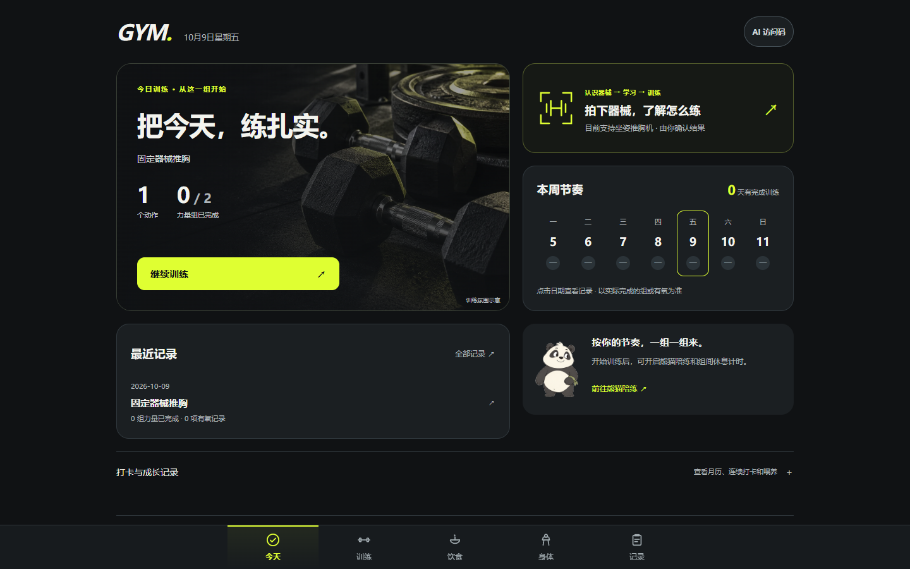
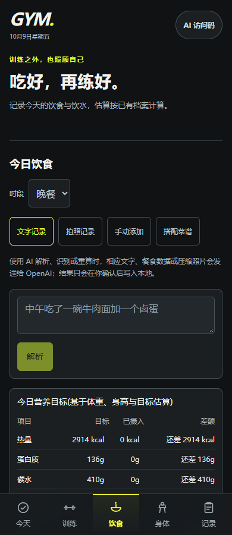
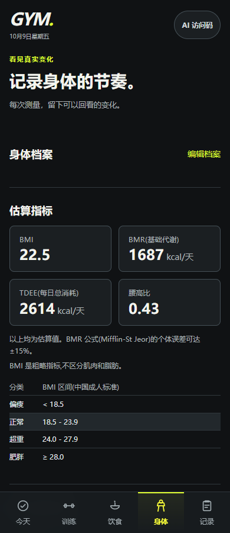
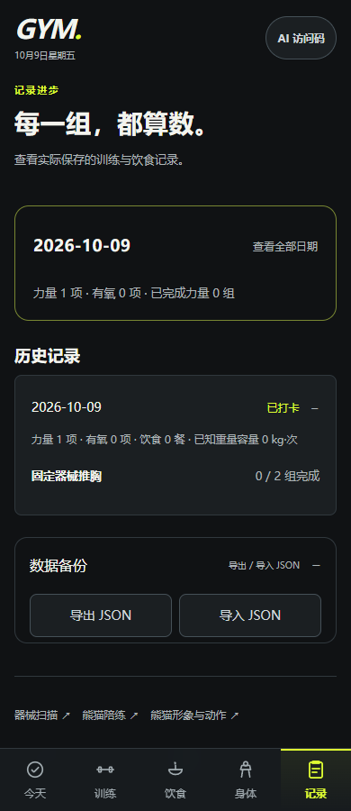

GYM · 2026.10.09 · 本地构建实际截图
认识器械，开始训练，记录进步。
石墨深色界面、黄绿色主操作、真实训练数据，保留已经确认的 D 熊猫。
下图使用独立浏览器与合成记录，展示实际页面，不是设计稿，也没有把演示成绩写入你的档案。手机图宽度为 390px；360/430px 也已检查。未替代真实手机和已安装 PWA 验收。
完整主流程
桌面布局

饮食、身体、记录
饮食录入
身体趋势 · 可按日期读值
所选日期的真实记录
验证边界
已验证浏览器中的保存、失败保留输入、计时、数据重载、断网缓存、键盘焦点和多种宽度。尚需真机相机、手机软键盘、安全区和安装后的 PWA 测评。本轮没有真实照片模型调用，没有新增器械识别类别，人体动作镜像继续暂缓。